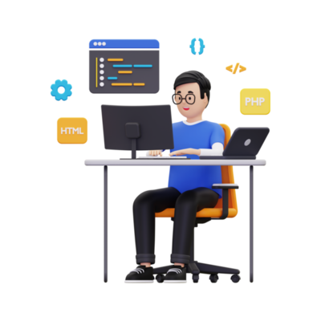

Hello everyone out here it's
Abhishek
I am a passionate web developer.

work i have done so far
work experience

A GRADUATE student with the prior basic knowledge
(2014)
I have been prominent inthe field
mentioned above
with the relavent skill requires to help the organaiation, which
may extract the meaningul insights
and best work tnure out of me so the tht the organaization is
benificial

HTML Developer
(2015-2016)
My HTML journey was started in early 2015
and 2016 where i explored various things bout HTML and its working
in the forms which made me prominent int he field of markup
language.
CSS Developer (2017-2018)
My css journey started in 2017 ad 2018
where i explores various repositories and other github
repositories where i started exploring the actual css format and
tags which helped me throughout to build various accomplishments
in the field of web development.

FACEBOOK INTERN
(2019-2020)
My first internship was with facebook, where I explored various
levels of development cycles and collaborative team works and also
worked with scrum team to ensure the best software product is
delivered by the facebook in the most adequate amount of time and
a reasonable balance product.
INSTAGRAM Developer Intern (2021-2022)
Heres my journey in instagram as a software developer intern which
embarked me with the real values of sustainable software
development and collaborative team management with the endorsement
of 2 years as an executive devops intern in the development
lifecycl.e